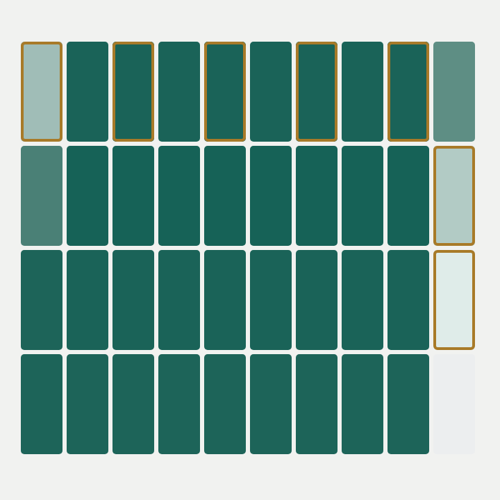
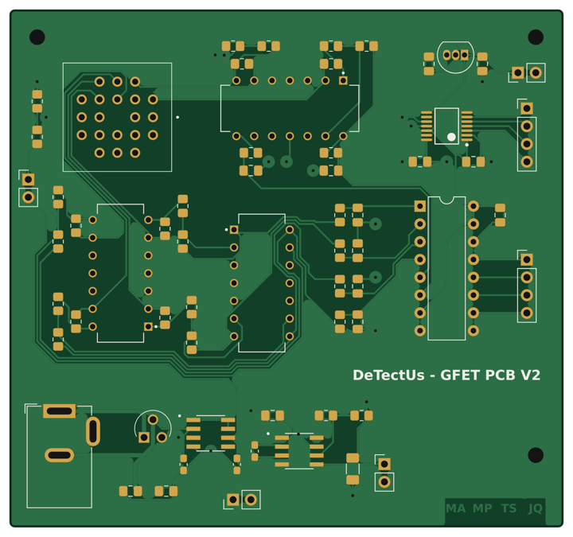
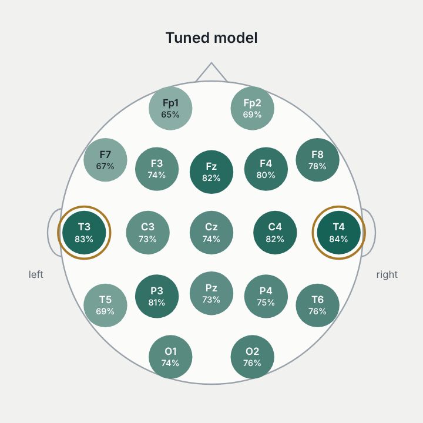

A framework that lets a spiking neural network keep its progress through power loss on a battery-free wearable, tested on hand gesture recognition from forearm EMG. First-author paper at IEEE EMBC, based on my master's thesis.
Spiking neural networks, intermittent computing, EMG, embedded AI

A low-noise board that measures currents of a few nanoamps from a graphene field-effect transistor chip. I led the electronics through two hardware versions, from a 14-channel STM32 board to a compact 6-channel design with a 12-bit SPI ADC and a Raspberry Pi.
Analog front end, PCB design, signal acquisition, bench testing

A deep learning model that classifies resting-state EEG from two electrodes instead of nineteen. We ranked every electrode on its own, kept the strongest pair and tuned a CNN-LSTM to work with just those two.
EEG, deep learning, channel selection, temporal modelling